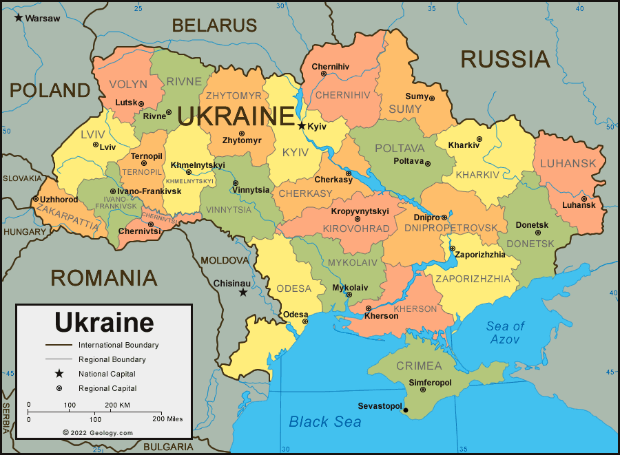

Ukraine is a country known for its beautiful and diverse landscape
well-preserved culture and tradition, beautiful women and a terrible nuclear disaster.
Actually, Ukraine is the largest country in Europe,
not including Russia.(EU).

Vienna
Vienna is known as the "City of Music"
Important sites:
1.Schonbur Palace
2.kunsthistorisches Museum of Vienna
3.Historic Center of Vienna
4.albertina
Population:19 lakhs
Linz
Famous for itsMany fine churches, museums, and cultural activities
Important sites:
1.Pöstlingbergbahn
2. Ars Electronica Center
3.Mariendom
Population:2.03 lakhs
Wiener Neustadt
"sidewalks"designed by Japanese artist Tadashi Kawamata was built around the main square.
Important sites:
1.Flusskreuzung
2.Johannesbachklamm
3.Türkensturz
Population:88,600
Graz
Cultural Capital of Europe 2003
Important sites:
1.Kunsthaus Graz
2.Eggenberg Palace
3.SchloBberg
Population:3.90 lakhs
Salzburg
This charming Austrian town is most famous for being"The birthplace of the classical composer Mozart"but has so much more in terms of historical sights
Important sites:
1.Hohensalzburg Fortress
2.Mirabell Palace
3.Salzburg Cathedral
Population:2.34 lakhs
Klagenfurt
Its extremely attractive Old Town quarter with its picturesque lanes, fine historical buildings, as well as its many well-preserved arcaded Renaissance courtyards with their trendy boutiques, galleries, and cafés.
Important places:
1.Hochosterwitz Cas
2.Minimundus
3.Europapark
Population:2.88lakhs
Innsbruck
Innsbruck is a true alpine gem and renowned worldwide for itsski resorts and tradition of hosting winter sports competitions.
Important sites:
1.The Hofkirche
2.Swarovski Crystal Worlds
3.Old Town Innsbruck
Population:3.11 lakhs
Bregenz
it is home toAustria's most important harbour, the world-famous Bregenz Festival and looks back on two millennia of history.